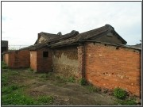
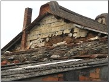
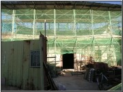
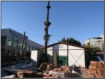

|
古蹟隨著時間經過，可能會經歷如颱風、地震等自然因素的毀壞或是人為使用的損害，因此需要加以維護、修復才能保持古蹟原來的樣貌，維持其完整性。三十幾年前，古蹟維護運動開始，政府極力倡導古蹟保存的改念，行政院文建會至今也不斷修訂「文化資產保存法」，明訂相關法律條文，針對古蹟不同的的條件和古蹟不同的實際狀況，辦理古蹟維護事宜。媽祖石屬於縣定古蹟，其古蹟指定權及執行單位為台北縣政府。
對於媽祖石的維護工作，我們可以採取一些具體行動。以下我們會根據文化資產保存法第二十條的前兩項內容來做解釋。古蹟之管理維護，係指下列事項：
一、
日常保養及定期維修：小朋友平日需維護媽祖石周圍的整潔，保持良好的環境，不刻意去破壞媽祖石，例如：不適當的敲打或是毀損。如果媽祖石因任何自然因素或是人為因素而遭到破壞，學校應該立即通報有關單位，負責單位會請古蹟專家至現場勘查其毀壞程度，擬定修復計畫，評估修復經費，進行古蹟維護過程，如：指定古蹟→內政部核定→依古蹟建築損壞情況訂定維護的先後順序…等，依照法律規定辦理。
二、
使用或再利用經營管理：小朋友在學校內，在不毀古蹟完整性的情況下，可以利用媽祖石從事教學學動或是提供學校學生攀爬玩耍。依文化資產法須適度開發，學校應開放讓社區民眾參觀媽祖石。以後在有關媽祖石的資料蒐集到達一定階段，應加強對學校學生及社區民眾的宣導，增進大家對社區古蹟的認識，正確的使用並維護古蹟。
三、
防盜、防災、保險。
四、
緊急應變計畫之擬定。
五、
其他管理維護事項。
|
|  |
|
古蹟維護不易（待整修的公司田溪程氏古厝 |
|  |
| 古蹟修繕需要資金與修繕的技術 |
 |
| 整修中陳悅記古厝公媽廳 |
|  |
| 整修中陳悅記古厝公館廳 |
|  |
| 整建中的陳悅記古厝因施工技術很難克服，整建困難 |
|
|